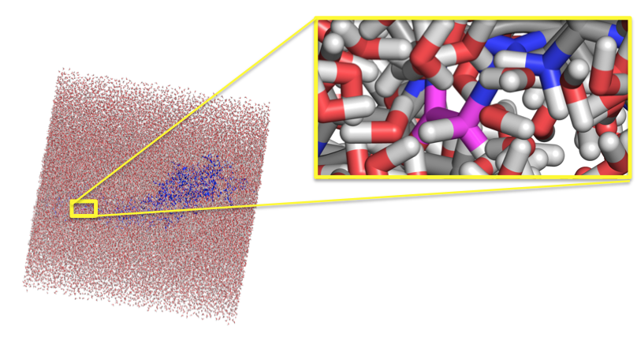
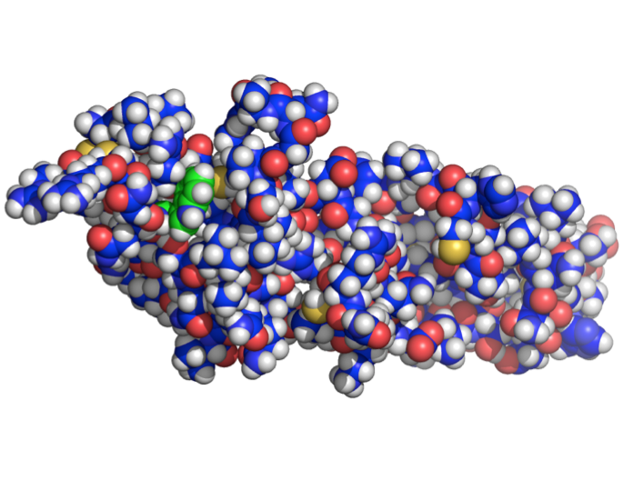
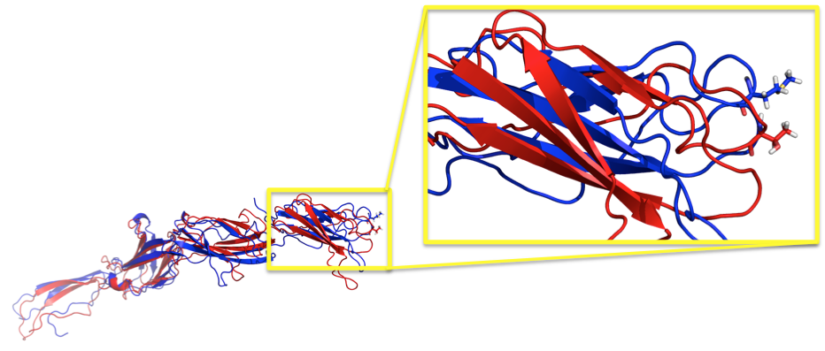
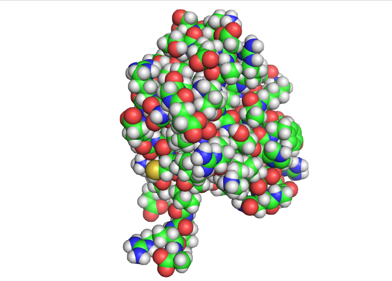

OtoProtein: Site Testing
The OtoProtein project combines the expertise of researchers from the Molecular Otolaryngology and Renal Research Laboratories (MORL) and the Michael Schnieders Laboratory at the University of Iowa to analyze proteins and molecules implicated in hearing loss. A list of the proteins and molecules currently being studied along with their structures can be found online at https://github.com/wtollefson/dvd-structures/tree/nshl_protein_study. All structures in the OtoProtein project were chosen from a comprehensive list of deafness associated genetic variants identified in the Deafness Variation Database (DVD) and molecular biophysics software algorithms available through Force Field X (FFX) were applied to the proteins. Shown below are examples of the OtoProteins that have been researched and refined using FFX algorithms.
DVD Proteins

GJB2 Hexamer: A cell membrane protein. |

MYO7A: Solvent exposed K268R variant. |

DFNB31: The DFNB31 structure pictured in purple was obtained from SwissProt. After rotamer optimization, the optimized structure pictured in blue shows an increase in beta sheet. |

USH2A R1777W: The arginine to tryptophan variant shown in green resulted in a free energy change of -1.42 kcal/mol. The variant showed increase hydrogen bonding. |
|

USH2A R666G: Proteins with missense mutations are solvated in a water box before simulation. This variant resulted in a pathogenic free energy change of 2.51 kcal/mol. |

USH2A C934W: The C934W variant is displayed in green. This solvent exposed variant resulted in a likely benign free energy change of 1.21 kcal/mol. |
|

USH2A T3976M: The wildtype and variant are displayed in red and blue respectively. A free energy change of 0.49 kcal/mol and the DVD classification both imply that the variant is benign. |

GIPC3: The GIPC3 protein is commonly implicated in hearing loss. |
Contact us at mallory-tollefson@gmail.com.